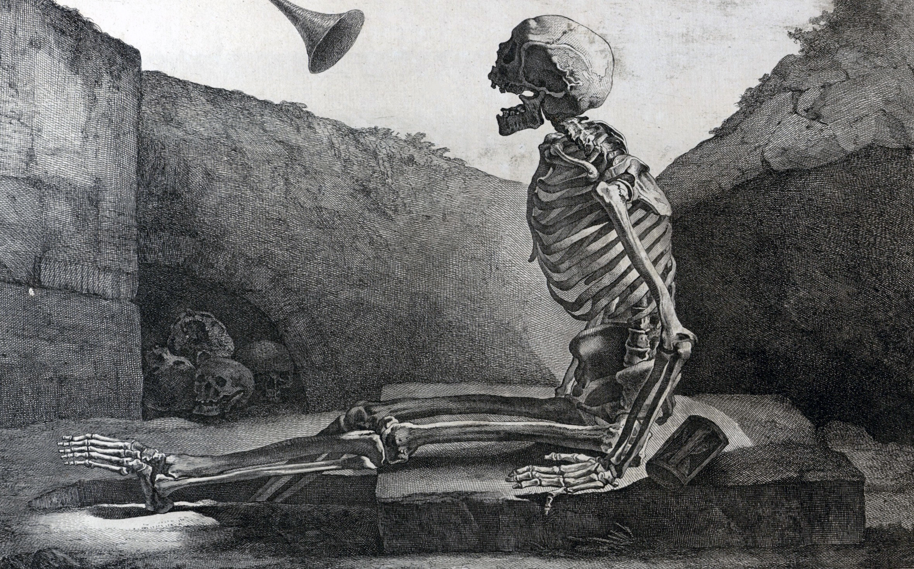
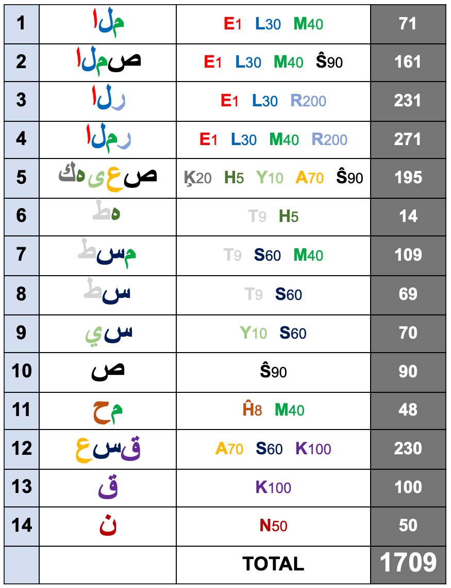
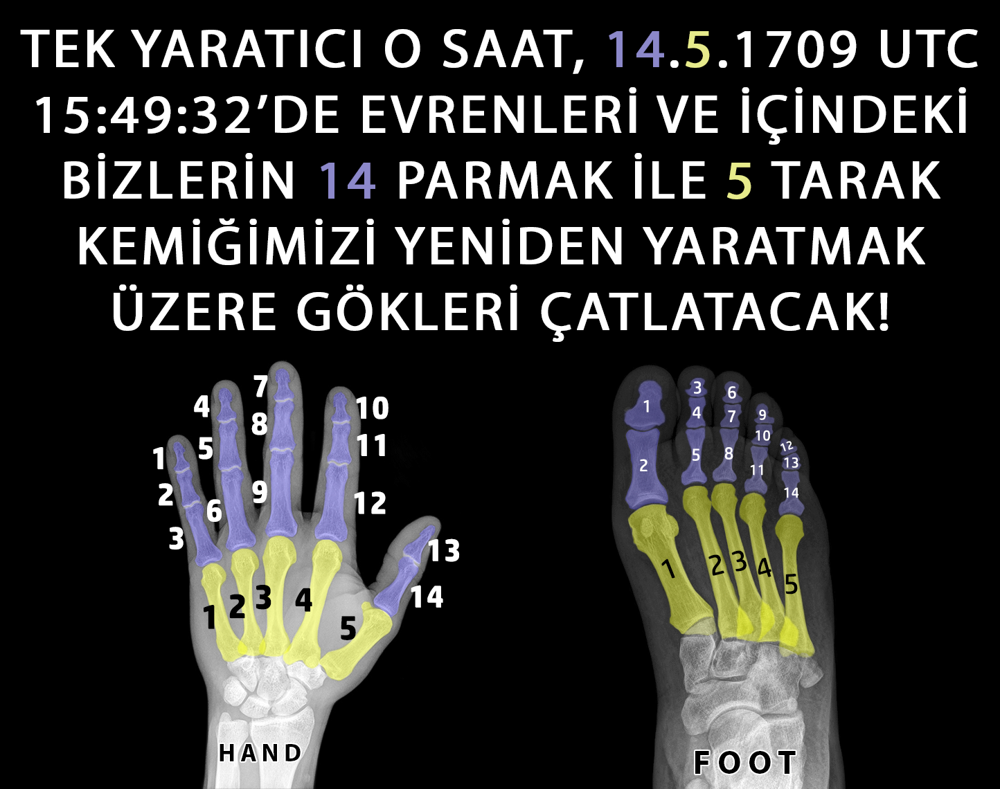
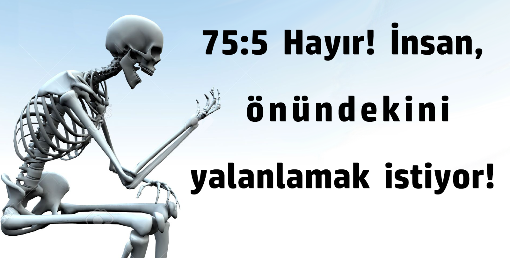
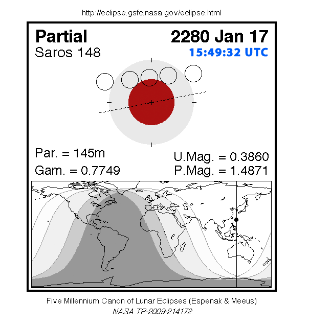
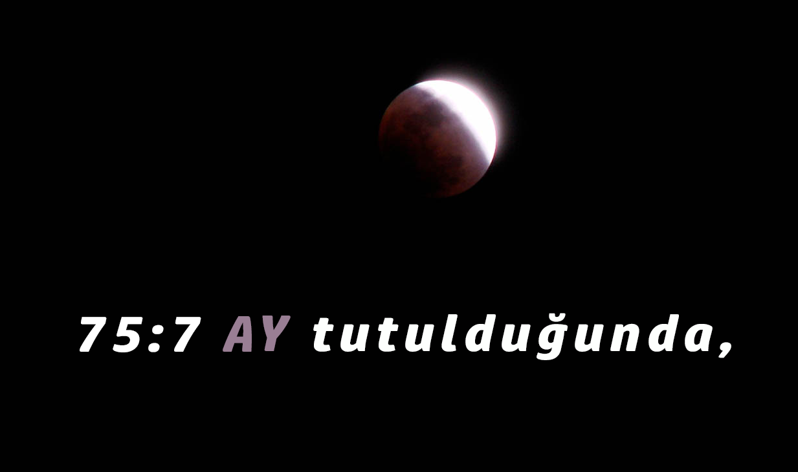

Where we know The Hijri Year 1709 Of The End Of The World ?
From here: masjidtucson.org/quran/appendices/appendix25.html
And Date and Time From: Sura 75 - The Resurrection
75:0 IN THE NAME OF ALLAH RAHMAN THE MERCIFUL!
75:1 I swear to DAY OF RESURRECTION.

75:2 And I swear to the blaming soul.
75:3 Does the human being think that WE will not reconstruct his bones?

75:4 Yes indeed; WE are able to reconstruct his finger tip.

75:5 But the human being desires to deny in front of him,

75:6 He asks: "When is Day of The Resurrection?"
75:7 At when the vision is sharpened.
75:8 And the moon is eclipsed.

17 January 2280 Corresponds to Hijri 14.5.1709
75:9 And the sun and the moon are collected together.
The Sun (91) + The Moon (54) = (14.5).1709 UTC 15:49:31
55:5 The sun and the moon are PERFECTLY CALCULATED!
75:10 The human being will say on that day, "Where is the escape?"

75:11 Absolutely, there is no escape.

75:12 To your OWNER, On That Day, Is The Final Destiny!
75:13 The human being will be informed, on that day, of everything he did to advance himself, and everything he did to regress himself.
75:14 The human being will be his own judge.
75:15 No excuses will be accepted.
75:16 Do not move your tongue to hasten it.
75:17 It is WE WHO Will Collect It Into QURAN.
75:18 Once WE recite it, you shall follow such a QURAN.
75:19 Then it is WE who will explain it.
75:20 Indeed, you love this fleeting life.
75:21 While disregarding the Hereafter.

75:22 Some faces, on that day, will be happy.

75:23 Looking at their OWNER.
75:24 Other faces will be, on that day, miserable.
75:25 Expecting the worst.
75:26 Indeed, when reaches the throat.
75:27 And it is ordered: "Let go!"
75:28 He knows it is the end.
75:29 Each leg will lay motionless next to the other leg.
75:30 To your OWNER, on that day, is the summoning.
75:31 For he observed neither the charity, nor the contact prayers (Salat).
75:32 But he disbelieved and turned away.
75:33 With his family, he acted arrogantly.
75:34 You have deserved this.
75:35 Indeed, you have deserved this.
75:36 Does the human being think that he will go to nothing?
75:37 Was he not a drop of ejected semen?
75:38 Then HE created an embryo out of it!
75:39 HE made it into male or female!
75:40 Is HE then unable to revive the dead?

Word "city" occurs in all QURAN 14 times as singular and 5 times as a plural, in Total 19 times.
Hijri 14.5.1709 UTC 15:49:31
Abjad Value of Name (Constantinople) of Contact Praying Human Shaped City Above in Arabic is: 334
Total Number of Verses In Honourable QURAN Is 19 x 334
17 . 01 . 2280 UTC 15 : 49 : 31 = 19 x 895383166049
2280 = 19 x 120 = 114 + 19 x 114 = 1919 + 19 x 19
So Hijri 1710 Is Wrong and Hijri 17:09 Is Correct Moon Based (Lunar/Hijri) Year of Resurrection!